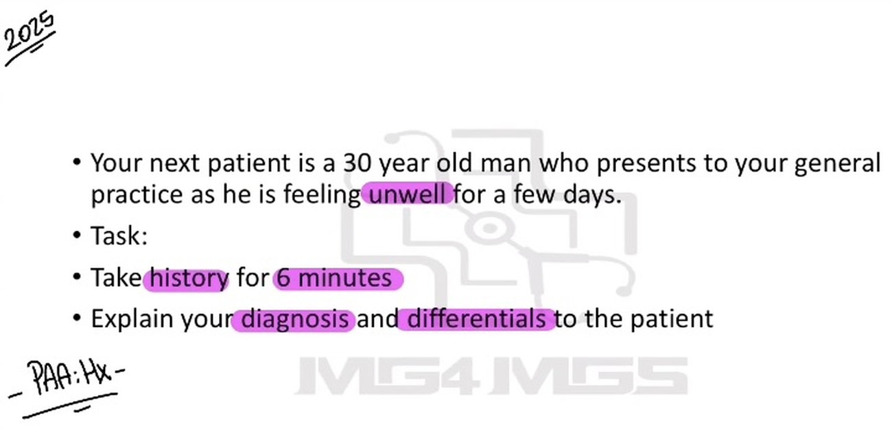
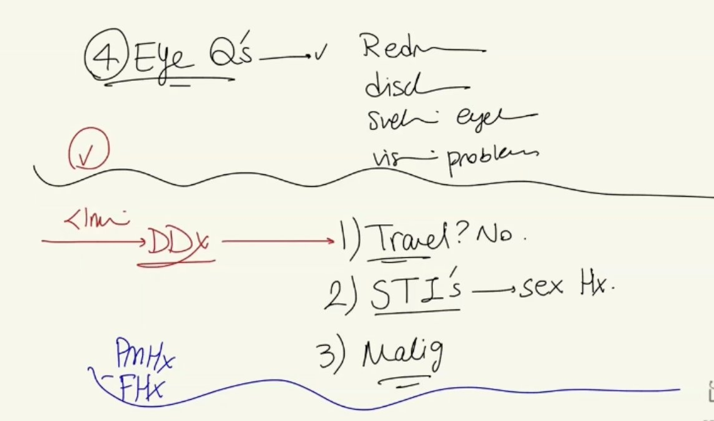
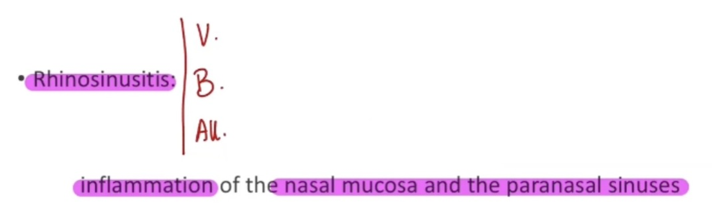
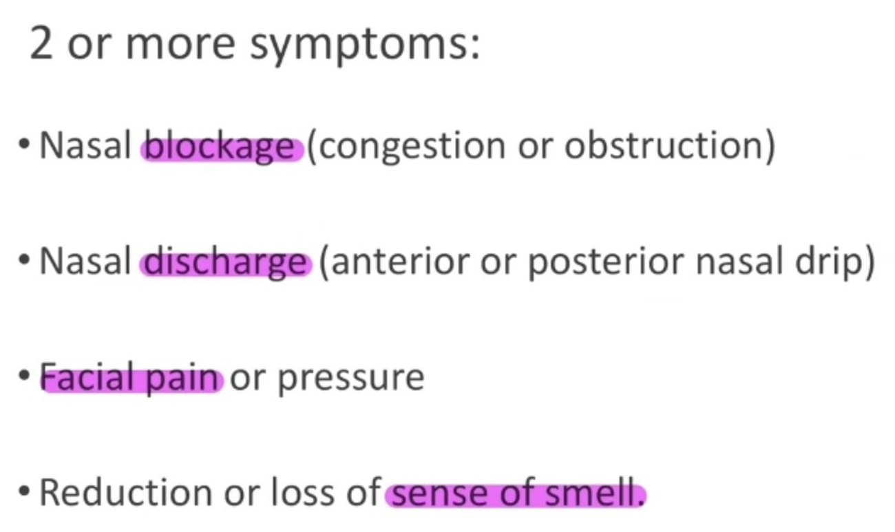
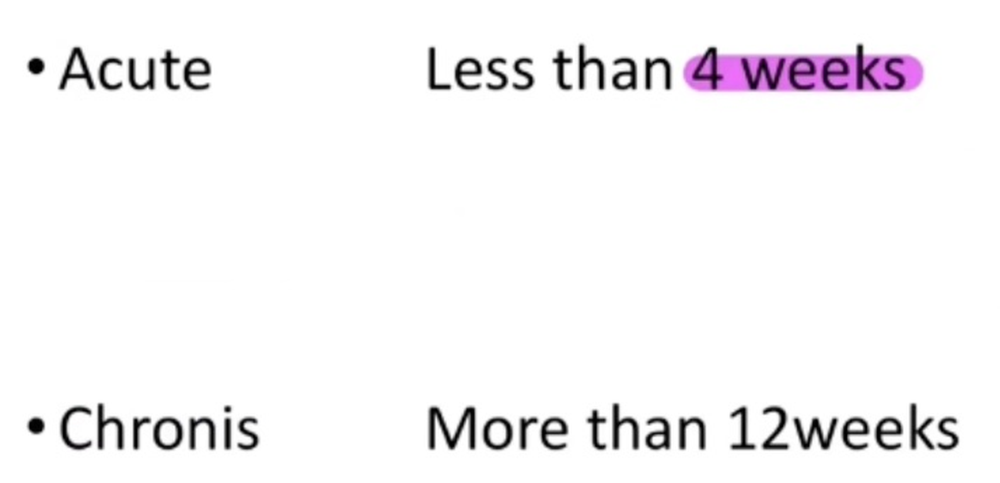

Source: Dr. Amir workshop — Med workshop 2 - 2026 / CLASS 5 UNWELL (Aug 2026 drop) · Specialty: general_practice
A 30-year-old man presents unwell for a few days, no lead point given. Task: history taking only (6 minutes), then explain diagnosis and differentials - no physical examination. Once the complaint declares itself as a stuffy nose and watery eyes, the structure pivots to an ENT-focused history. Two diagnoses to present: acute rhinosinusitis (most likely allergic, viral trigger possible) and a concurrent asthma exacerbation.
Findings: clear, watery discharge - pointing away from bacterial infection and towards viral/allergic rhinitis.
Standard ENT sequence: fever/chills (no fever), ear pain/discharge, sore throat, facial pain/pressure (positive - maxillary sinus, points to cheek), post-nasal drip, neck lumps.
Red-flag questions: rash (EBV/mononucleosis), drooling/dysphagia (epiglottitis, quinsy), voice change (bacterial tracheitis/airway infection), headache/neck stiffness (sinusitis spreading to meningitis), eye symptoms - vision change, discharge, eyelid swelling (orbital cellulitis, a complication of sinusitis requiring urgent CT).
LRT/pneumonia: cough (yes, dry), shortness of breath, wheeze (yes). First-time wheeze? No - childhood asthma, gave up hockey, later improved; used sister's Ventolin with relief (reversible obstruction).
Allergic/atopic: sneezing, itchy eyes/nose, watery eyes, itchy rashes (eczema screen). Family history: mother hay fever, sister asthma; patient allergic to pollen. Triggers: dust exposure at work, pets, carpets, household smoking (partner smokes).
Diagnosis: acute rhinosinusitis - inflammation of the nasal lining (rhinitis) and paranasal sinus (sinusitis); explain all three types (viral, bacterial, allergic) and that it is most likely allergic. Second diagnosis: asthma exacerbation (cough, wheeze, Ventolin helped).
Reasons: rhinorrhoea + watery eyes + maxillary facial pain; strong atopic family history; personal asthma/pollen allergy; trigger exposure; no fever (bacterial less likely).
Differentials: viral (EBV) and bacterial (Group A Strep) pharyngitis/tonsillitis; serious ENT infections (epiglottitis, bacterial tracheitis, quinsy, gonococcal pharyngitis); pneumonia, TB, atypical pneumonia; orbital cellulitis; travel-related infection; malignancy; and meningitis/sepsis if spreading infection.





Reviewed by: history-taking-expert (Australian clinical supervisor) · fact-checked against the irStudy medical textbook RAG index.